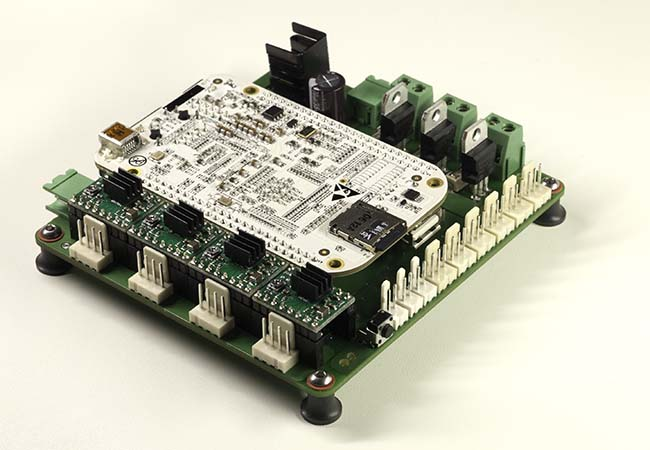

BeBoPr
Fork this project on
GitHub
!

BeBoPr Website
» Home
» Contact
» Download
Wikipages on GitHub
» Home of the BeBoPr
» The BeBoPr Cape
» I/O signals
» Stepper Drivers
» Lasercutting
» Heater Control
» Code Compilation
» Running
More info
» Github sourcecode
» Beaglebone
» Youtube channel
Contact the awesome
You can email the brainz through:
Sorry, you need Javascript on to email me.